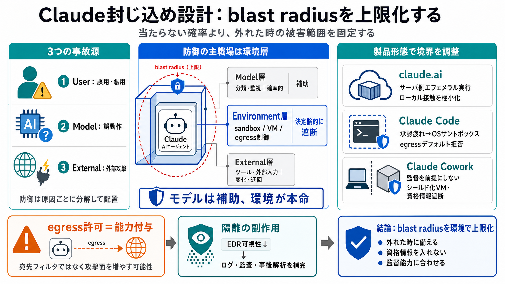

The Architectural Flaw at the Core of Anthropic's MCP - OX Security
ox.security logo with light gray background and subtle blue border. Property 1=Software supply chain security 1. Lessons…

事故の“上限”を設計
生成AIエージェントが実行環境へアクセスできるほど、失敗時の被害範囲（blast radius）が拡大します。だから重要なのは「当たらない確率」だけでなく「外れたときの被害を固定」する設計です。
3つの事故源
事故は主に、ユーザーの誤用/悪用、モデルの誤動作、外部攻撃の3系統で起きます。防御も分解して配置すると、効く場所が見えます。
確率より境界
モデル層の防御（分類器・監視）は100%になりません。一方、環境層の境界（サンドボックス/VM/ファイル/通信制御）は、より決定論的に“通さない”力があります。
防御を3層へ
防御は「モデル層・環境層・外部コンテンツ層」に分けて考えるのが要点です。特に、環境層では“egress（外向き通信）”が事故の通り道になります。
プロダクト差が封じ込めを変える
claude.ai / Claude Code / Claude Coworkは対象ユーザーと実行条件が異なるため、封じ込め設計も変わります。重要なのは「監督の現実性」に合わせて境界を強くすることです。
claude.ai：極小化
claude.aiではサーバ側のエフェメラルコンテナ（gVisor）で実行し、ユーザーのローカル領域にほぼ触れられないようにします。結果としてblast radiusを最小化します。
Claude Code：承認疲れ
Claude Codeは当初、ステップごとの承認で制御していましたが、テレメトリで承認が約93%に到達し、ユーザーの監督が薄れる問題が起きました。そこでOSレベルのサンドボックス（例：ネットワークデフォルト拒否）へ進化しました。
Claude Cowork：常時効く境界
Claude Coworkでは、bash等の判断をユーザーに依存しにくい前提から、ローカルVM（シールド化VM）を使います。ホストの資格情報はゲストに入れないなど、「絶対に常時効く境界」を志向します。
通り道＝egress
重大な漏えいは、プロンプトインジェクションのようにモデル層が不審を見抜けないケースや、許可経路経由の外部送信で起きます。特にegress allowlistは「宛先フィルタ」ではなく、その先でできる機能の能力付与（capability）になります。
副作用も出る
VM隔離を強めるほど、ホスト側からゲスト内部が見えにくくなりEDR可視性が下がることがあります。封じ込めはセキュリティだけでなく、ガバナンス/監査/ログ設計にも波及します。
強さの調整
封じ込めの強さは、ユーザーが監督できるかに合わせて設計すべきです。開発者向け（Claude Code）は監督に余地がありますが、知識労働者向け（Claude Cowork）はVMで“常時効く”境界へ寄せます。
結論：環境で上限化
この稿が示す核心は「封じ込めは環境層から」であり、「許可経路は能力付与で攻撃面になる」という失敗パターンです。自社のユーザ能力・外部連携・監査要件に合わせて、防御配置と監視設計まで再設計してください。
ox.security logo with light gray background and subtle blue border. Property 1=Software supply chain security 1. Lessons…
We recently built Claude Code auto mode, which [automates safer approvals](https://www.anthropic.com/engineering/claude-…
# AI Agent Security Risks 2026: MCP, OpenClaw & Supply Chain. If your organisation is deploying AI agents or has Claude …
# Claude Code CVE-2025-59536 & CVE-2026-21852: What Enterprise Teams Must Know. Two serious vulnerabilities in Anthropic…
[Skip to main content](https://www.anthropic.com/news/claude-code-security#main-content)[Skip to footer](https://www.ant…